盘点中国出产的顶级美味食材

对于吃货们来说，美食是永恒的追求。白松露、阿尔马斯鱼子酱、金枪鱼等等固然是世界顶级的食材，但是对于部分像小编一样有一颗中国胃的吃货来说，恐怕就不是那么对胃口了。其实，咱们泱泱大中华，从来不缺美食，缺少的是发现美食的眼睛。只要你用心观察，你会发现中国有些美味食材，丝毫不亚于这些在世界上享有盛誉的美食。
阳澄湖大闸蟹 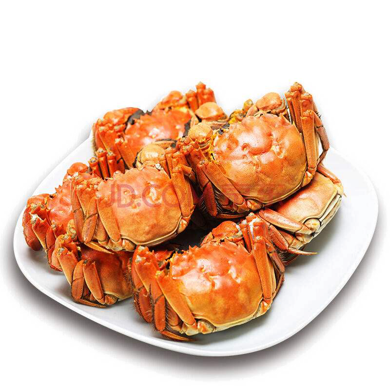毫无疑问，每年金风送爽、菊花盛开之时，全国人民都要掀起一场吃大闸蟹的热潮。俗语说：“秋风起，蟹脚痒，九月圆脐十月尖。”九月要食雌蟹，这时雌蟹黄满肉厚；十月要吃雄蟹，这时雄蟹蟹脐呈尖形，膏足肉坚。
长江魤（é）鱼 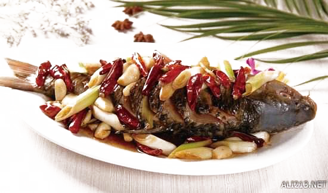每当提起长江中著名的食用鱼，人们总会想起鲥鱼、刀鱼。。。然而鲜少有人知道，历史上还曾有一种鱼的美味被众多挑剔食客千里追寻，它就是被当地人称为“华达子”的魤鱼。
安徽臭鳜鱼 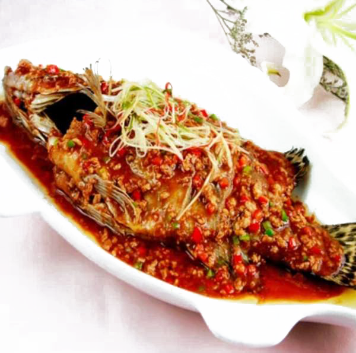安徽臭鳜鱼可谓是大名鼎鼎，又名臭桂鱼、桶鲜鱼、桶鱼，腌鲜鱼，是著名的徽州菜代表之一。做徽菜的餐厅里如果少了这道菜，那基本上可以认为是不太正宗了。
潮汕手打牛肉丸 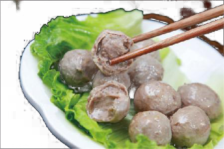潮汕美食精工细琢，讲究“清而不淡，鲜而不腻”，有着深厚的底蕴和独特的魅力。潮汕牛肉丸就是其中最具代表性的一种美食。选用新鲜的牛腿包肉作料，去筋后切成块，用力将肉槌成肉酱，加入调料拌匀，再用手使劲搅挞，直至肉浆粘手不掉。此时用手抓起肉浆，握紧拳头，从拇指和食指间挤出一丸肉，用羹匙掏进温水盆里，烫熟后即成爽脆的牛肉丸。
刀板香 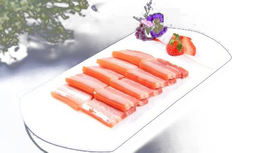喜爱徽菜的人应该都知道“刀板香”。用腌咸肉制作的“刀板香”是徽州人待客的一道主菜，可以说，没吃过刀板香，就相当于没吃过正宗的徽菜。
灯影牛肉 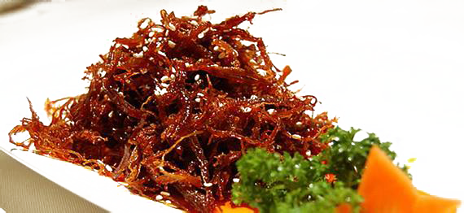灯影牛肉是四川达州地区的传统美食。以“灯影”为名，誉其肉片之薄，足可在灯光下透出影像。灯影牛肉的历史悠久，可以追溯到百年以前的清朝光绪年间。它的制作也非常考究，从选料开始就有十分严格的标准：原料用牛全部是宣汉黄牛，只取牛身上四个部位的肉：和尚头、红板、白板和佛坐子。因为只有这几个地方毫无筋腩，口感最好。这几个部位在一头牛身上仅占10%-15%的重量，可见要求之高。纯手工制作，成品薄如纸片，色泽红亮，鲜香麻辣，入口化渣。小编也曾有幸吃过一次正宗的灯影牛肉，那肉片看起来轻薄无比，味道却是极其醇厚的，入口之后牛肉的香味在口中久久不散。百年品牌，确有独到之处。
干巴菌 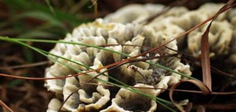干巴菌是云南的珍稀野生食用菌，近几年来湖北一些地区也有少量分布。干巴菌看外表其貌不扬，但在云南人眼里，它却比在国际上备受追捧的黑松露、松茸还要贵重，被云南人推为菌中最杰出者。
葛仙米
葛仙米是藻类植物的一种，又名水木耳、天仙米、珍珠菜等。葛仙米在世界上的分布十分稀少，主要出产地都集中在中国，以湖北鹤峰、四川等地较为出名，堪称中国一绝，世界珍稀。
公明烧鹅 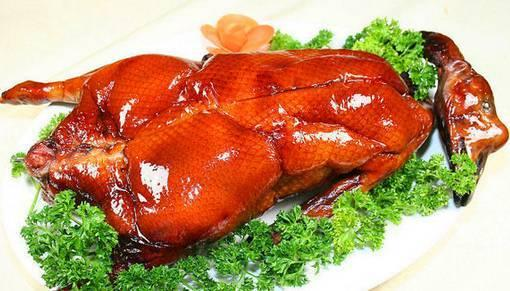广东烧腊全国闻名，而公明烧鹅无疑是其中最闪亮的一颗星。早在民国二十八年，公明烧鹅就已名扬海外。可以说，到公明未吃烧鹅，相当于白来了一趟。
海南东山羊 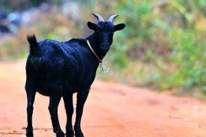海南东山羊主产于海南万宁的东山岭，因此被当地人简称为“东山羊”。感谢你的阅读，我们的微信号是厨影美食，请加关注哦！更多精彩内容请关注微信公众号“厨影美食”。东山岭的岩石繁多，山坡陡峭，岭上盛产东山羊喜爱采食的特异灌木杂草，这些东山羊日间跳跃于岩石之间，登高采食，夜间山上栖息，饿食嫩叶草果，渴饮山泉之水，全身毛色乌黑发亮，体格健壮，肉质鲜嫩肥美，与加积鸭、和乐蟹、文昌鸡并称为“海南四大名菜”。
海南加积鸭 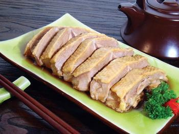加积鸭，俗称“番鸭”，相传是300多年前由华侨从马来西亚引进的良种鸭。加积鸭的饲养方法非常特别：先是给小鸭仔喂食淡水小鱼虾或蚯蚓，约二个月后，小鸭羽毛初上时，再开始圈养，缩小其活动范围，并以米饭、米糠、番薯、豆饼等进行填喂，20天后便长成肉鸭。
杭州酱鸭 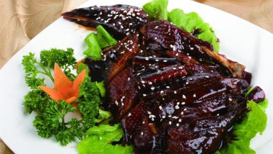杭州酱鸭是杭州一道传统的风味美食。据《杭俗遗风》记载：“酱鸭一味，以杭城绍酒店所制者为佳。每岁八九月间，各酒肆皆自制酱鸭，多者数百，少者亦百余。远自申江亦有来购者，一过冬至，即销售一空。凡老居杭城及嗜中物者，类皆知之。”
禾花鱼 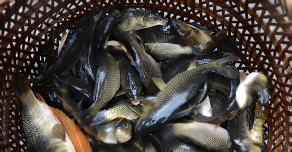禾花鱼又称禾花乌鲤、禾花鲤、乌鲤，因长期放养在稻田内，食水稻落花而得名，在我国南部山区多有养殖，比较出名的有全州禾花鱼、湖南郴州禾花鱼。
横山豆腐乳 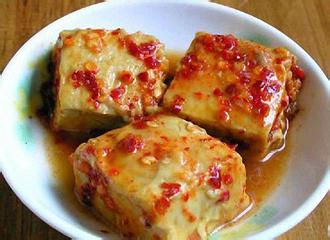在中国，豆腐乳是一道非常常见的小菜，佐粥拌饭无所不可。至于哪里的豆腐乳最好，恐怕答案不一，每个人都有自己的见解，不过横山豆腐乳无疑是其中非常出色的一种了。横山豆腐乳起源于宋代，成名于清代。据传清代的陈宏谋由于为官清廉，没有珍稀物品给皇帝进贡，只好硬着头皮将家乡的特产横山豆腐乳献入宫中。没想到乾隆皇帝品尝之后连声称赞，非常喜爱。清代诗人、美食家袁枚在他的著作《随园食单》中也称赞：广西以白腐乳为最佳。
洪山菜薹[tái] 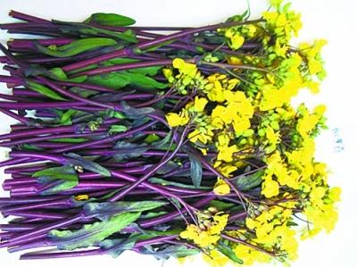洪山菜薹，紫菜薹的珍稀品种，因其原产于湖北省武汉市洪山区一带而得名。这个一发出来，也许有人会嗤之以鼻：菜薹到处都有啊，有什么稀奇？但是，作为一个曾在湖北生活了好几年的人，小编必须要严肃认真的像大家介绍一下这种美味。
湖南酱板鸭 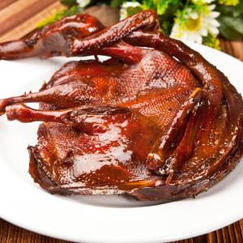说起鸭子，湖南的酱板鸭不可不提。酱板鸭可以称得上是湖南一绝，风靡大江南北。据说在湖南当地，许多老字号的酱板鸭商家经常会出现供不应求的情况，不得不限量售卖，可见其受欢迎的程度。
黄河鲤鱼 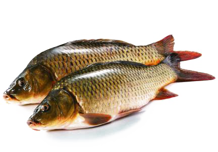“黄河三尺鲤，本在孟津居；点额不成龙，归来伴凡鱼”。在我国，自古就有“岂其食鱼，必河之鲤”、“洛鲤伊鲂，贵如牛羊”之说。黄河鲤鱼作为中国四大名鱼之一，绝非凡品。
金华火腿 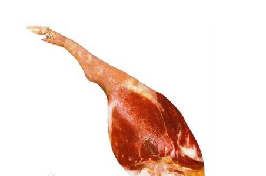金华火腿在中国可谓是家喻户晓，就算在国际上也是与著名的西班牙伊比利亚火腿、意大利帕尔玛火腿相提并论的“世界三大火腿”之一，是几千年来中国人民制作腌腊肉制品的智慧结晶。
蕨菜 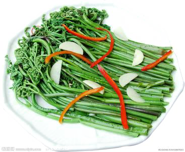蕨菜又叫龙头菜 、如意菜、拳头菜，在我国大部分地区均有分布。不可不提的是，蕨菜曾是满汉全席九白宴中的一道菜，因此被称为“山菜之王”，受到人们喜爱。
荔浦芋头 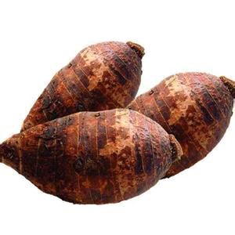荔浦芋头又名槟榔芋、魁芋，产自广西桂林的荔浦县。荔浦芋头原为野生芋，经过多来人工培育，形成了集色、香、味于一体的优良品种。荔浦芋头个头大，重量可达五六斤，芋肉呈白色，其上布满细小红筋,类似槟榔花纹，质地松软，具有浓郁的香味，是芋头中的佼佼者。
临高乳猪 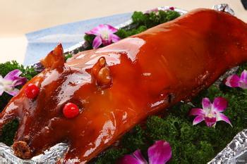临高乳猪产于海南北部的临高县，是当地的特色美食。在临高地区，每逢有亲朋好友前往，都要以临高乳猪招待。临高县地处丘陵山地地带，素有"海南小平原"之称。临高乳猪是经过当地多年的自然筛选形成的优良品种，猪外观黑背白肚，前额有一白色倒三角形，身小腰直，皮薄骨细，瘦肉率高。临高乳猪的一个重要特点是不能圈养，平时都在野外吃青草，自由嬉戏，因此肉质紧实，野味较浓。
宁夏滩羊肉 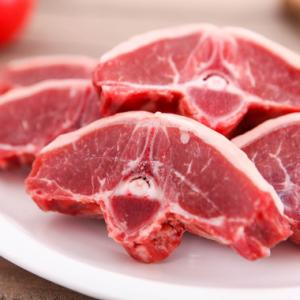有人说，没吃过宁夏的羊肉，就不算真正吃过羊肉。这句话或许略有夸大，但宁夏滩羊肉的美味确实毋庸置疑的。
诺邓火腿 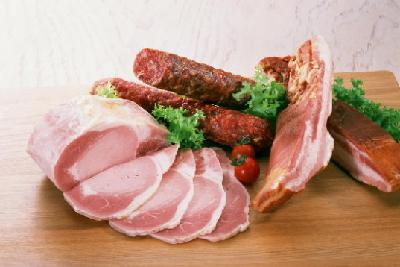一部《舌尖上的中国》，使得本来名不见经传的诺邓火腿声名大噪，一时之间洛阳纸贵，如今在市面上已经很难买到正宗的诺邓火腿了。
蒲菜 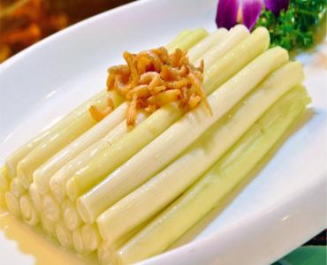蒲菜，俗称草芽，为香蒲的嫩茎。在我国江浙、四川、云南等多地均有分布，以南方水乡最多。蒲菜入宴在我国早已有之，明朝顾过诗曰：“一箸脆思蒲菜嫩，满盘鲜忆鲤鱼香”。“蒲菜佳肴甲天下，古今中外独一家”。
赛里木湖高白鲑 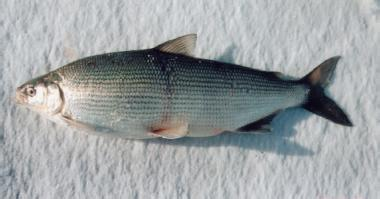塞里木湖出产的高白鲑被国际水产界称为世界“奇”鱼。它生长在海拔2100米的新疆赛里木湖。赛里木湖被当地人称为“宁静之湖”，水质冰冷纯净，没有污染。赛木里湖是冷水湖，水温极低，被誉为“大西洋最后一滴眼泪”。为了抵抗严寒，高白鲑身体里的不饱和脂肪酸高达35．6％，是普通鱼类的3-4倍，因此鱼肉口感极其细腻嫩滑，犹如豆腐一般，故高白鲑又被称为“豆腐鱼”。由于高白鲑完全摄食天然饵料，保证了鱼肉的天然味道。高白鲑在水中时身体是透明的，但出水即死。从入网到出水时，因求生而激发了身体脂肪特有的香味，鱼一离水，即有清香味。高白鲑可清蒸可红烧可香煎，肉质细腻，清香满口，这种独特的风味是其它任何鱼都没有的，真可谓“极品”了。
上党腊驴肉 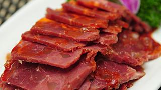山西的各种美食中，以上党腊驴肉最为有名。它起源于唐宋鼎盛于明清。早在明代，就已驰名于上党和晋南地区。 我国有一句俗语：“天上龙肉，地下驴肉”，极言驴肉之美味。上党腊驴肉以新鲜驴肉为主要原料，配以各种香料、佐料，做工极为讲究。制成的上党腊驴肉色泽鲜艳，肉质细腻，酥而有筋，肥而不腻，风味十分独特，备受消费者喜爱。
太湖白虾 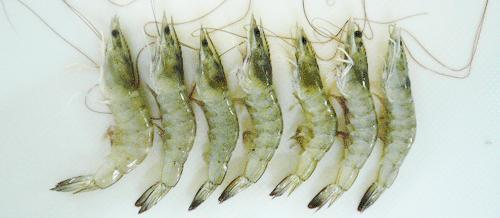《太湖备考》载："太湖白虾甲天下，熟时色仍洁白。大抵江湖出者大而白……"白虾是太湖名产，活时通体透明，晶莹如玉，死后身体变成白色，因此得名。太湖白虾是著名的“太湖三宝”之一，壳薄肉嫩，味极鲜，可用来出品诸多风味菜肴。每年农历六、七月份是吃白虾的时令，此时的白虾肉质肥嫩、虾子饱满、虾脑充实，被当地人称为“三虾”。
太湖银鱼 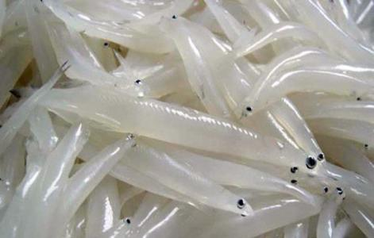银鱼，俗称面条鱼，长约七至十厘米，体长略圆，形如玉簪，通体银白，几近透明，故名银鱼。太湖银鱼的历史十分悠久，春秋时期已有记载太湖盛产银鱼。清康熙年间，银鱼被列为贡品，与白虾、白水鱼并称“太湖三宝”。
乌龙头 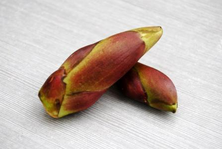乌龙头是乌龙头树每年春天长出的紫红色“弹头状”幼芽，主要分布于甘肃天水林区、陇南山地、漳县阴湿山区等地，是名贵的菜、药两用野菜。每年春天，乌龙头从树上抽出嫩芽，等待嫩芽长至四厘米左右时即可采取。感谢你的阅读，我们的微信号是厨影美食，请加关注哦！更多精彩内容请关注微信公众号“厨影美食”。这时的乌龙头还未开苞，如同竹笋一般，需要将芽内嫩茎和未展开的嫩叶一层层剥下来食用。乌龙头即可鲜食，又可晒为干菜，还可用醋、盐腌制成咸菜。其味道非常独特，入口微苦，清脆柔嫩，但细细回味，却是甘甜清香。当地人用乌龙头做成的打卤面非常受欢迎，号称“天水一绝”。
乌鱼子 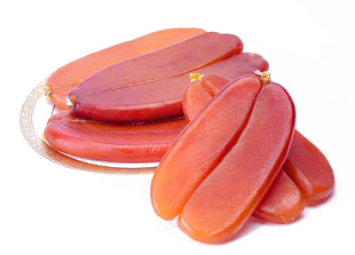乌鱼子是用雌乌鱼的卵腌制而成的美味食材，日本人把乌鱼子称为“唐墨”，并把它与云丹（海胆）、揆子（海参卵巢）视为他们眼中的世界三大美食之一。然而大概许多人不知道，其实乌鱼子并非是日本的特产，中国的台湾也盛产乌鱼子。
五指岩生姜 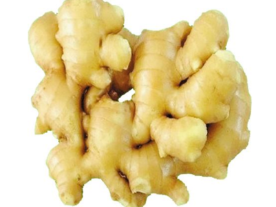五指岩生姜是著名生姜品种，因栽培在海拔1000余米的象珠镇中山的五指岩山而得名。五指岩山自然环境十分优越，方圆五十里无污染。农户栽种此姜，施农家肥，不喷农药，因此五指岩生姜是纯自然无污染绿色食品。五指岩山云雾缭绕，土壤肥沃，五指岩生姜栽培采用传统方法，因此风味独特、品质优良。其外型美观，表皮光滑洁白带鹅黄色，嫩芽粗壮，呈浅紫红色，肉质细嫩，汁多渣少。香味浓郁、较辣、品质佳，乃烹饪调味之佳品。
婺[wù]源荷包红鲤鱼 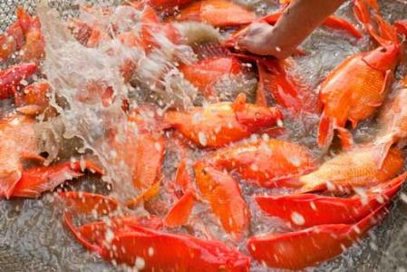荷包红鲤鱼是江西婺源的特产，因为全身艳红，形似荷包而得名。这种鱼在婺源一向被视为吉祥、喜庆之物，无论是家里来了贵客还是寿宴喜宴，餐桌上都少不了一道荷包红鲤鱼。“清炖荷包红鲤鱼”是婺源的传统名菜，成菜色泽艳丽、鲜香细腻、嫩滑爽口，有一种自然的甘甜味道，吃过一次就再也难忘。
细鳞 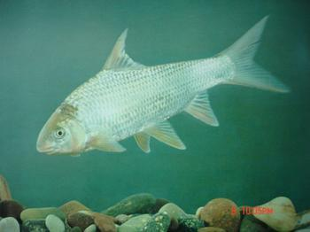在中国，有一种鱼非常少见，很多人甚至未曾听说过。这种鱼主要产自祖国北疆，如东北三省、陕西、甘肃、新疆一带，是一种非常珍贵的冷水性鱼类。感谢你的阅读，我们的微信号是厨影美食，请加关注哦！更多精彩内容请关注微信公众号“厨影美食”。这种鱼对于生长环境的要求比较高，只能栖息于山溪水温较低、水质清澈的流水当中，普通人难觅其踪，只有当地人在机缘巧合的情况下能够捕到一些，一般都不外售，仅仅留着供自己家里享用。
兴凯湖大白鱼大白鱼是兴凯湖特产,也叫兴凯湖鲌，学名翘嘴红鲌，色白如玉，俗称大白鱼。由于兴凯湖环境好，水质清洁无污染，因此出产的大白鱼品质特别好，是其它流域的大白鱼无法相比的。大白鱼体形修长，鳍尾发达，以善游著称。到兴凯湖去旅游的人们，除了欣赏优美如画的自然景观，也总要一尝大白鱼的美味。
雪蛤 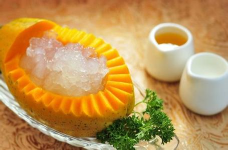雪蛤，学名东北林蛙，是生长于中国东北林区的一种珍贵蛙种。这种蛙常以昆虫和野果为食，因为极其耐寒，冬天可以在东北零下几十度的低温下冬眠长达五个月之久，因此得名“雪蛤”。因为它这种极强的生命力，人们给它自然界“生命力之冠”的称谓。
榛蘑 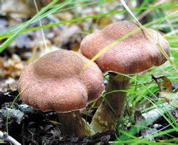榛蘑是中国东北特有的山珍，也是极少数不能人工培育的食用菌之一。榛蘑主要分布在黑龙江山区林区，一般多生在浅山区的榛柴岗上，故而得名“榛蘑”。感谢你的阅读，我们的微信号是厨影美食，请加关注哦！更多精彩内容请关注微信公众号“厨影美食”。榛蘑呈伞形，淡土黄色，鲜嫩滑爽，味道鲜美，被人们称为“山珍”、“东北第四宝”。以榛蘑为原料制成的“小鸡炖蘑菇”是东北人招待贵客的不可缺少的传统佳肴，成菜鲜甜回甘，清香四溢，真美味也。
镇江肴肉 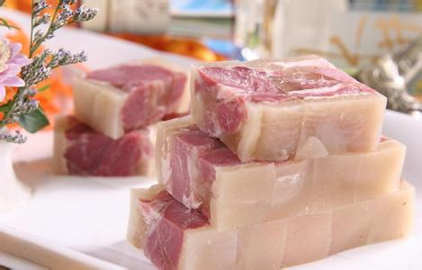镇江肴肉，原称“硝肉”，又名“水晶肴肉”，亦叫“水晶肴蹄”。三百多年来，镇江水晶肴肉一直盛名不衰，驰誉南北。传说古时镇江酒海街酒店的小二，误把硝当盐腌猪蹄膀，烧煮后，肉红皮白，光滑晶莹，卤冻透明，犹如水晶，香味浓郁，食味醇厚。后来，人们嫌“硝肉”一名不雅，改为“水晶肴肉”，流传至今，成为镇江的传统名产。
义河蚶 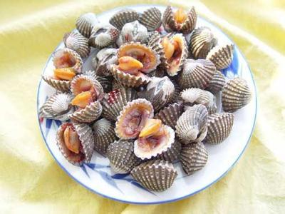湖北天门具有传奇色彩的独有的淡水贝类水产品。它有两枚坚硬扁长的贝壳，合拢时如一柄短剑。肉呈奶黄色，用以氽汤，鲜美可口，是湖北省天门市著名的筵席用菜。是一种稀有淡水贝类。

Copyright © 2017 | 陕ICP备05001616号 | 陕西省，西安市碑林区，西安理工大学金花校区 王小改